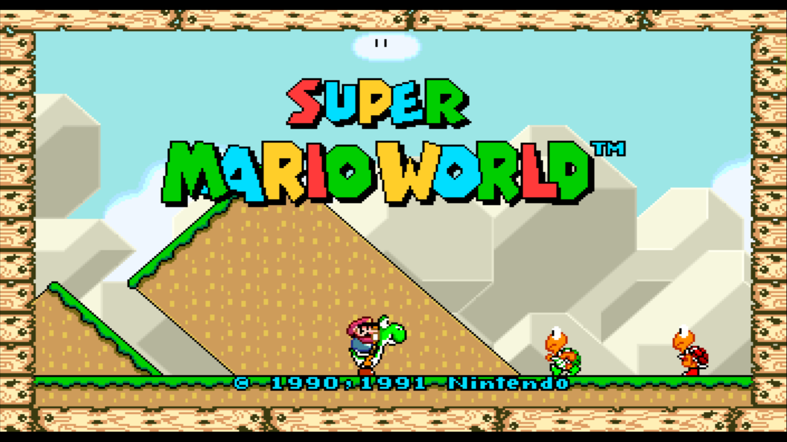
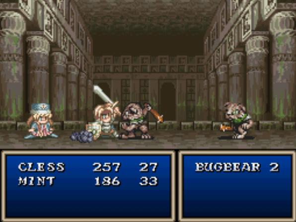

You find yourself in a
dark cave...
Are you up for an
ADVENTURE?
You could think you'll be
ROLE-PLAYING
...
But what if you're wrong...?
Will it be a
HORROR
story?
Choose wisely...
ADVENTURE

RPG

HORROR
Audio not supported by your browser
![Image divided in 4 parts, each one representing a different Resident Evil game; The first one is from Resident Evil 3 Remake. Jill Valentine with a reworked look and Carlos Oliveira, one of the surviving members of the Umbrella Biohazard Countermeasure Service. The zombie boss Nemesis is above them; The second is from Resident Evil 2. A disfigured face into the shadows, only the right eye and cheek visible with hand grabbing a dark door in front of it; Third is from Resident Evil 4 with Leon holding his handgun near his head pointing up; Fourth image is from Resident Evil Village. A shallow bearded man looking down. His face with blood marks. All in black, white or grayish colors](./../images/horror-game.png)